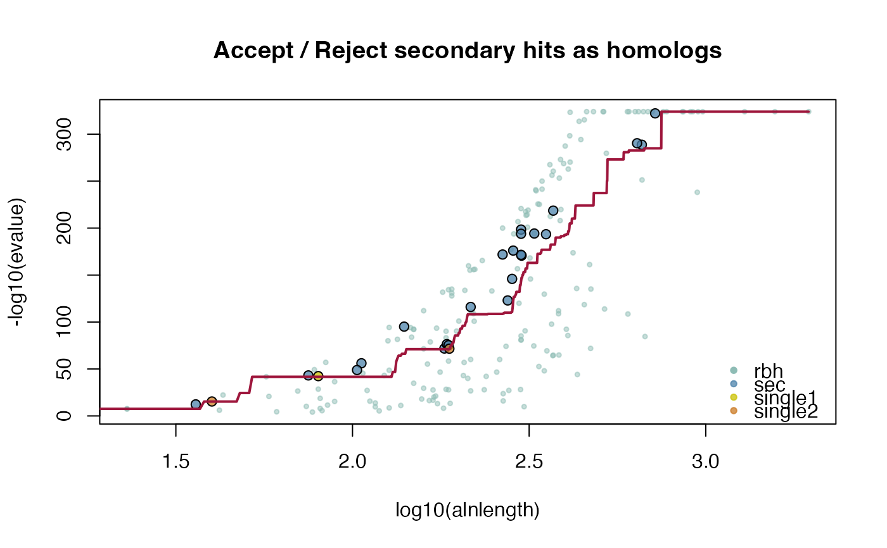
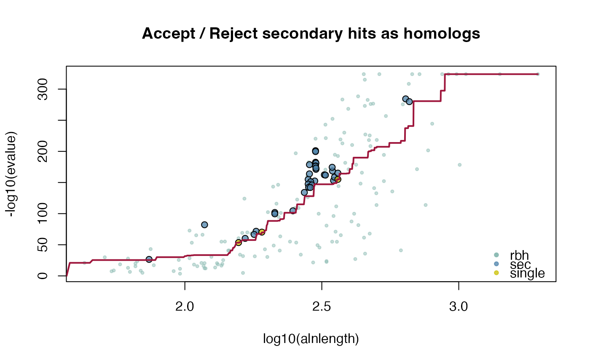

This function calculates (conditional-)reciprocal best hit (CRBHit) pairs from two two CDS fasta file's. Conditional-reciprocal best hit pairs were introduced by Aubry S, Kelly S et al. (2014). Sequence searches are performed with last Kiełbasa, SM et al. (2011). If one specifies cdsfile1 and cdsfile2 as the same input a selfblast is conducted.
cdsfile2rbh( cdsfile1, cdsfile2, lastpath = paste0(find.package("CRBHits"), "/extdata/last-1219/bin/"), outpath = "/tmp", crbh = TRUE, keepSingleDirection = FALSE, eval = 0.001, qcov = 0, tcov = 0, pident = 0, alnlen = 0, rost1999 = FALSE, filter = NULL, plotCurve = FALSE, fit.type = "mean", fit.varweight = 0.1, fit.min = 5, longest.isoform = FALSE, isoform.source = "NCBI", threads = 1, remove = TRUE )
| cdsfile1 | cds1 fasta file [mandatory] |
|---|---|
| cdsfile2 | cds2 fasta file [mandatory] |
| lastpath | specify the PATH to the last binaries [default: /extdata/last-1219/bin/] |
| outpath | specify the output PATH [default: /tmp] |
| crbh | specify if conditional-reciprocal hit pairs should be retained as secondary hits [default: TRUE] |
| keepSingleDirection | specify if single direction secondary hit pairs should be retained [default: FALSE] |
| eval | evalue [default: 1e-3] |
| qcov | query coverage [default: 0.0] |
| tcov | target coverage [default: 0.0] |
| pident | percent identity [default: 0.0] |
| alnlen | alignment length [default: 0.0] |
| rost1999 | specify if hit pairs should be filter by equation 2 of Rost 1999 [default: FALSE] |
| filter | specify additional custom filters as list to be applied on hit pairs [default: NULL] |
| plotCurve | specify if crbh fitting curve should be plotted [default: FALSE] |
| fit.type | specify if mean or median should be used for fitting [default: mean] |
| fit.varweight | factor for fitting function to consider neighborhood [default: 0.1] |
| fit.min | specify minimum neighborhood alignment length [default: 5] |
| longest.isoform | specify if cds sequences should be removed to the longest isoform (only possible if data was accessed from NCBI or ENSEMBL) [default: FALSE] |
| isoform.source | specify cds sequences source (either NCBI or ENSEMBL) [default: NCBI] |
| threads | number of parallel threads [default: 1] |
| remove | specify if last result files should be removed [default: TRUE] |
List of three (crbh = FALSE)
1: $crbh.pairs
2: $crbh1 matrix; query > target
3: $crbh2 matrix; target > query
List of four (crbh = TRUE)
1: $crbh.pairs
2: $crbh1 matrix; query > target
3: $crbh2 matrix; target > query
4: $rbh1_rbh2_fit; evalue fitting function
Aubry S, Kelly S et al. (2014) Deep Evolutionary Comparison of Gene Expression Identifies Parallel Recruitment of Trans-Factors in Two Independent Origins of C4 Photosynthesis. PLOS Genetics, 10(6) e1004365.
Kiełbasa, SM et al. (2011) Adaptive seeds tame genomic sequence comparison. Genome research, 21(3), 487-493.
Rost B. (1999). Twilight zone of protein sequence alignments. Protein Engineering, 12(2), 85-94.
Kristian K Ullrich
## compile last-1219 within CRBHits make_last() ## load example sequence data athfile <- system.file("fasta", "ath.cds.fasta.gz", package = "CRBHits") alyfile <- system.file("fasta", "aly.cds.fasta.gz", package = "CRBHits") ## get CRBHit pairs ath_aly_crbh <- cdsfile2rbh(athfile, alyfile, plotCurve = TRUE)#> [1] 211 3## get classical reciprocal best hit (RBHit) pairs ath_aly_rbh <- cdsfile2rbh(athfile, alyfile, crbh = FALSE) dim(ath_aly_rbh$crbh.pairs)#> [1] 181 3## selfblast ath_selfblast_crbh <- cdsfile2rbh(athfile, athfile, plotCurve = TRUE)## see ?cds2rbh for more examples